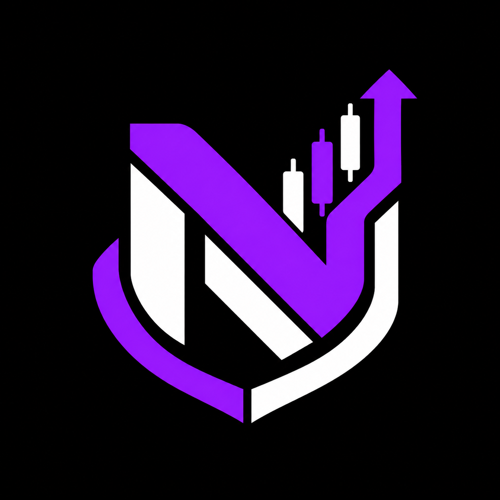
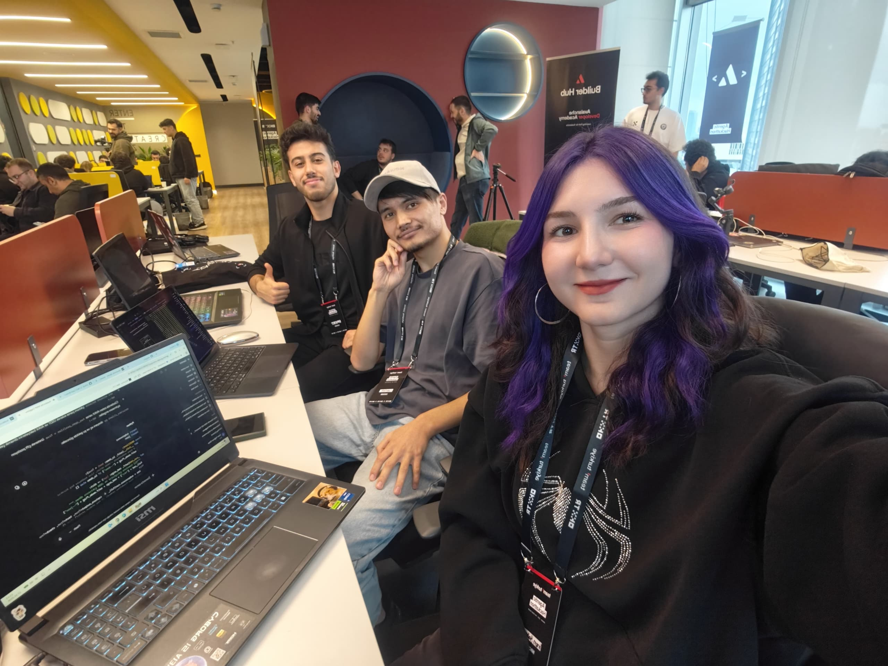

SORUN
Gürültü çok, güven az.
Grafikler, zincir verileri, haberler ve takvim birbirinden kopuk. Tek bir göstergeye güvenmek tehlikeli.

NEXA//TRADERHACKATHON’DA DOĞDU
İrem, Abdullah ve Yusuf olarak karmaşık piyasa verilerini herkesin anlayabileceği, gerekçesini açıklayan ve riski önceleyen bir sisteme dönüştürmek için Nexa-Trader’ı geliştirdik.

BİZİM HİKÂYEMİZ
Piyasa araçları çoğu zaman ya fazla karmaşık ya da neden karar verdiğini söylemeyen kara kutular. Biz üçüncü bir yol seçtik: veriyi bir araya getiren, her kararı açıklayan ve koşullar eksikse beklemeyi bilen bir sistem.
SORUN
Grafikler, zincir verileri, haberler ve takvim birbirinden kopuk. Tek bir göstergeye güvenmek tehlikeli.
FİKİR
Her veri kaynağı ayrı konuşur. Ancak dört kontrol de hazır olduğunda sistem işlem fikrini ilerletir.
İLKE
Risk kapısı geçilmeden hiçbir sinyal emir değildir. Beklemek de bilinçli bir karardır.
EKİP
Aynı masada tasarladık, geliştirdik, test ettik ve birlikte sunduk.
Hackathon ekip üyesi
Hackathon ekip üyesi
Hackathon ekip üyesi
ORTAK HEDEFİMİZ
İnsanların otomasyona körü körüne güvenmesini değil, sistemin ne gördüğünü ve neden beklediğini anlayabilmesini istiyoruz.